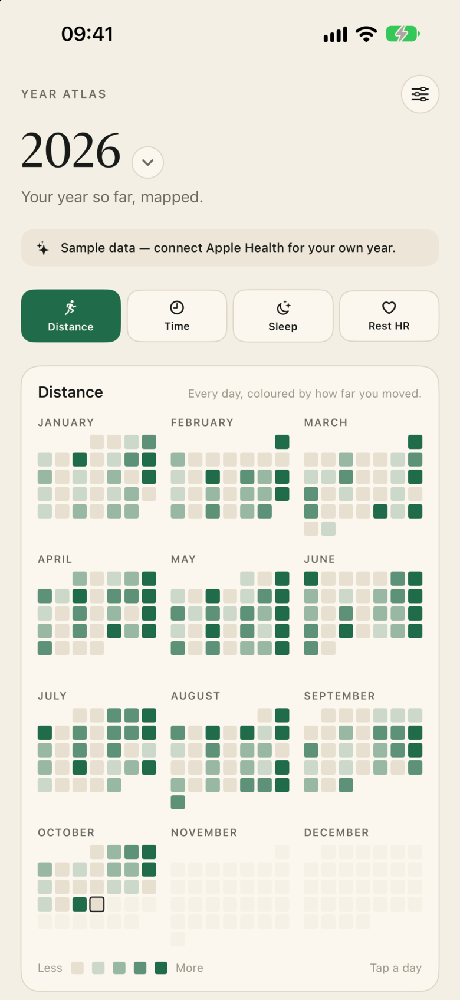

For Garmin & Apple Health
Your year,
mapped.
Every day you moved, every night you slept, in one quiet picture. Built from the health data already on your iPhone. No account. No cloud. No API key.

One picture
Twelve months, 365 squares. Distance, active time, sleep or resting heart rate — see the shape of the year at a glance.
One tap
Garmin Connect already shares activity with Apple Health. Turn it on once and your whole history appears.
One poster
Turn any year into a print-quality A4 poster in Paper, Night or Terrain. Save it, print it, send it.
Private by design.
Year Atlas reads Apple Health on your iPhone and keeps the result on your iPhone. There is no account, no server, no analytics, no advertising and no third-party SDK. Health data is never uploaded. The local cache is excluded from iCloud backup. Apple Health is read-only — Year Atlas never writes to it.
What it is not.
Not another dashboard. Not a coaching subscription. Not a social network. It is the one screen you actually want to look at in January — and the poster you want on the wall.